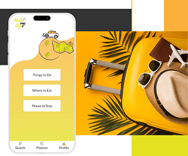
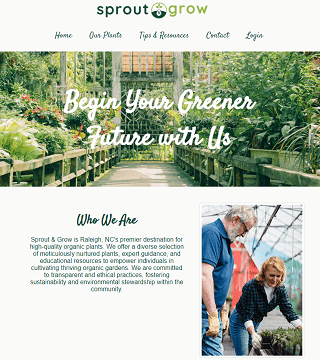

Svitlana Terletska
Web/UX Designer
As a UX designer, I focus on simplicity and functionality
of the products I create. With a solid background in
user-centered design, I am dedicated to creating
seamless and enjoyable experiences for users. My
approach involves a combination of creative
problem-solving, user research, and iterative testing to
ensure that the end product not only meets but exceeds
user expectations.
My Projects
View selected projects below. More information can be found at sterletska.com.

Vacation Planner App
The Vacation planner is an all-in-one app that allows users to:
- search for major vacation essentials and add preferred places to visit to the trip;
- create trips to save and organize the information;
- quickly pick the place from the trip based on the user’s location
View project

Sprout and Grow Website
The website for the local nursery that sells organic plants.
View project
Work Experience
Insurance Manager
Insurance Company
2006-2014
The ability to understand, effectively communicate with
people, identify and address challenges faced by customers and
partners of the insurance company, coupled with a commitment
to ongoing improvement and process facilitation, enabled me to
efficiently fulfill my responsibilities when working with customers
and partners.
Responsibilities:
- Work with individual clients and enterprises
- Manage the team of insurance agents
- Partner with banking institutions
Education
Wake Tech Community College (Raleigh, NC, USA)
AAS in UX/Web Design, 2023-2025
Cherkasy State Technological University (Cherkasy, Ukraine)
B.S. in Finance, 2000-2005